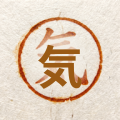

The stamped kanji is the logo — header, favicon, future landing page — not an animal. Interim asset: Higgsfield photo-texture background with a real Shippori Mincho 気 glyph overlaid on top, so character accuracy doesn't depend on the AI's kanji rendering. Replace with the real carved-hanko scan per founder tasks.